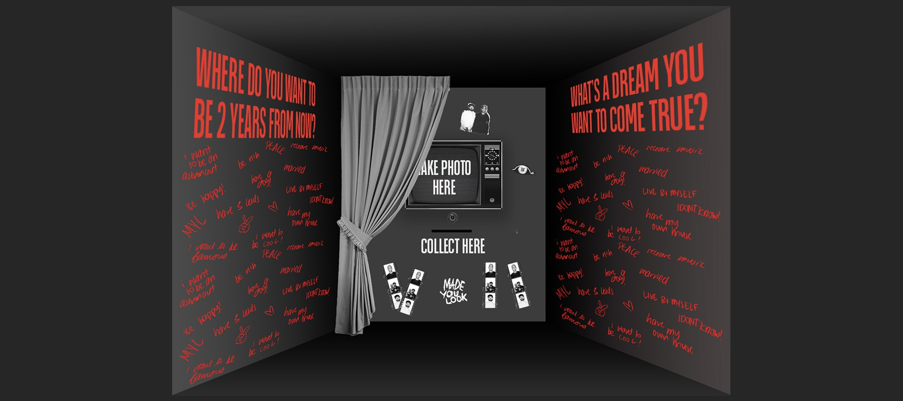

Made You Look
2024
SOFTWARES
Figma | HTML & CSS | JS
TEAM MEMBERS
Jefritz Espino - Project Manager | UX/UI Designer | Developer
Martina Nunez - UX/UI Designer | Graphic Designer
Mehmet Gultekin - Motion Designer | Team Leader
Nikita Anne Bellew - Graphic Designer | Lead Researcher
Made You Look was an upcoming duo about to release their debut album. For this brief, we worked with Sony Music to create a brand identity and campaign to attract and engage audiences for Made You Look. Our objectives were to create branding that is loud, nostalgic and edgy.


Our initial branding ideas as a team consisted of thermal duotone colours of the duo that followed the colour palette of their original photos. But we found that this direction was not giving the loud, nostalgic tone of voice that we wanted. Therefore, we explored different visual directions that were more monotone, bold and showcased the duo's dynamic personality.
Through communication with the client, they provided a short description of how the duo met in a boxing gym and their values as a duo being “to inspire people to chase their dreams.” Combining these two ideas, we created an installation of a locker room photobooth where users can take a photo and answer a prompt to inspire ambitions in their hearts. This can be experienced both physically and, on the website, as they want to reach a target audience of not just New Zealand but also globally.
To ensure our prompt matched the Made You Look brand identity, we user tested different prompts and
found that “Where do you want to be 2 years from now?” invoked the most hopeful feelings, was the
easiest to answer and made people feel wishful.